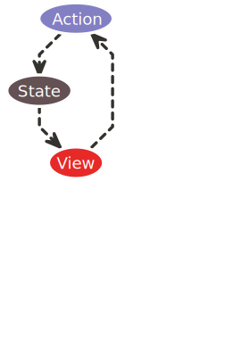

ASM (Application state management)
Patron de conception
- L'état contient les données de l'application
- L'état ne change pas, si une composante change, un nouvel état est généré
- Chaque changement de l'état est communiqué à la vue pour mise à jour
- Les vues déclenchent des actions
- Les actions sont communiquées à l'état pour générer un nouvel état

L'état (source de vérité)
- L'état est un objet
- L'état est passé en paramètre avec l'action à un réducteur
- Un nouvel état généré suite à chaque action

Action
- On utilise généralement des constantes pour les actions
- Indiquent une intention forte: commit, dispatch
- Doit être accompagnée par l'état à partir duquel on souhaite générer un nouvel état
- Le nom de l'action a, généralement, une signification affaire
- Les actions doivent être "des fonctions pures". Même input -> même output
- Les actions ne doivent pas effectuer des opération I/O
Réducteur (reducer)
- Un réducteur reçoit plusieurs paramètres en entrée et répond par un seul.
- Le réducteur reçoit l'état et l'action
- La structure de son code est généralement un CASE-SWITCH ou un IF-ELSEIF-ELSE
- La structure du réducteur pourrait se baser sur des notions d'héritage dans le cas de POO
Middleware
- Sont lancés à chaque exécution d'action
- Réalisent les opération I/O pour garder les actions à l'état de "fonctions pures"
- Sont utiles pour les actions à généraliser systématiquement (log, vérification des accès, compression, crash reporting, etc..)
CTRL+Z
- Fonction Undo disponible avez 0 effort!
- Peut être rendue disponible entre les sessions (nécessite un serialize de l'état)
Débogage et restauration
- Avec un Middleware de crashreporting, les dévs disposent de l'état avant le crash et l'action qui a provoquée le crash avec les paramètres
- L'application peut être restaurée au dernier état fonctionnel avant le crash
Voyage dans le temps
- L'évolution de l'état permet de revenir en arrière et de rejouer des scénarios
- Peut être utilisé comme tests automatisés dans tous les paliers!!!
- Peut être utilisé comme preuve d'audit uniforme pour la même application